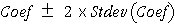
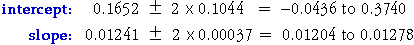

Confidence Intervals for Slope and Intercept
Minitab gives a handle on the sample-to-sample variability of the
least squares coefficients (as estimates of the corresponding parameters for
slugs in general) in its regression output. The following output was generated
by Minitab with the Regression command where the response variable
was weight (a Minitab column with the 100 slug weights) and the explanatory
variable was len3 (a Minitab column containing the 100 values of
(length) ).
).
|
The regression equation is weight = 0.165 + 0.0124 len3 Predictor Coef Stdev t-ratio p Constant 0.1652 0.1044 1.58 0.117 len3 0.0124131 0.0003693 33.61 0.000 |
The column titled 'Stdev' gives the standard deviation of the two coefficients and therefore describes their accuracy. 95% confidence intervals for the corresponding parameters describing 'slugs in general' are of the form

(If the number of data points, n, is small — say under 20 — you should really use a slightly larger value from t-tables with (n - 2) degrees of freedom instead of the constant '2'.)
95% confidence intervals for the two linear model parameters are therefore

Hypothesis Tests for parameters
The Minitab output also provides a column of p-values associated with the model parameters. These p-values describe whether the data are consistent with the corresponding model parameter being zero.
We could continue with this analysis by fitting a model without an intercept term, an option when specifying a regression model in Minitab. However there are other serious problems that mean a different approach is required.